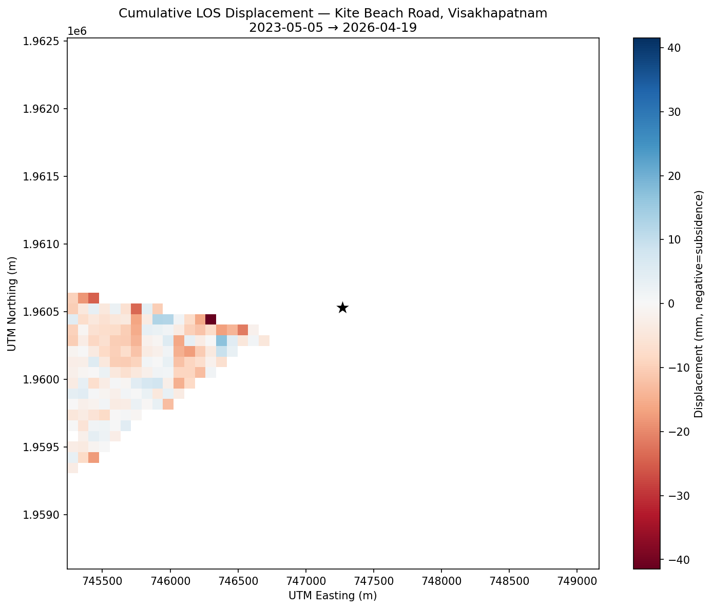

SATALITE Kite Beach
L2-equivalent single-track Sentinel-1 pilot — Visakhapatnam
First InSAR pilot for the SATALITE brief. Sentinel-1 road-subsidence monitoring at Kite Beach Road, Visakhapatnam. Descending-only by necessity — the site sits in a well-known Sentinel-1 ascending-coverage gap over coastal east India. This is the pilot that validated the pipeline before the strict-L3 Delhi run. InSAR / remote-sensing engineer, freelance, April–May 2026.

Single-track by site geometry, not by choice. An exhaustive ASF API probe across every product type and both S1A and S1B for 2014–2026 returned zero ascending granules over a 3-year window at this AOI. The honest framing in the client doc: this is L2-equivalent (LOS-only) under EGMS terms, not strict L3 (V_U + V_E). Stated up front — saves the client the time of asking.
Stack and method. 86 Sentinel-1 SLC bursts, descending relative orbit 19, IW1, VV polarisation, May 2023 – April 2026. SBAS network with the same EGMS-style rule as Delhi (3 nearest forward neighbours, max 60-day temporal baseline). 250 pairs submitted to ASF HyP3 originally; 244 retained after coherence filtering at the load step.
MintPy SBAS time-series inversion. Same workflow scaffolding
I’d later upgrade for Delhi —
smallbaselineApp.py with config tuned to the AOI,
reference pixel on a stable rooftop, coherence-based network
modification with keepMinSpanTree. 152 persistent
scatterers at temporal coherence ≥ 0.85. LOS velocity
range −11.7 to +8.5 mm/yr; mean
−0.71 mm/yr; time-series RMSE ~5 mm (within
EGMS noise floor).
Most-subsiding PS at 17.7174 N, 83.3222 E — west of the road, built-up area. Flagged for client follow-up.
Pilot deliverables — deliberately scoped. Velocity
map, cumulative subsidence map, time-series chart at the
most-subsiding PS, GeoJSON of the 152 PS, time-series CSV, summary
JSON, plus a Streamlit dashboard. Two markdown reports (pilot
report + methodology). Numbered Python scripts in
scripts/ covering the full pipeline end to end
— this script chain is what got reused and upgraded for the
Delhi strict-L3 run.
Limitations called out in the client doc (deliberate, addressable in the full project): single descending track only (no ascending → no full 3D decomposition), no ERA5 atmospheric correction applied yet (would reduce noise ~50%), local reference frame (not tied to ITRF). All four of those got upgraded for Delhi, by design.
The ASF gap is the real story. I burned time on the catalog
check up front and it was the right call — running the full
pipeline blind would have produced single-track output with no
way to flag for the client that the strict L3 deliverable was
geometrically impossible at this site. The catalog check became a
one-time 20_check_track_coverage.py script I now run
before quoting any new InSAR site.
Burst SLC display. A side artifact — the
sentinel1_burst_2026-04-19.tiff demo file is raw SLC
complex data (CInt16, complex64, no map projection). It will not
display as a normal radar image in QGIS without amplitude
extraction + georeferencing. A reminder that not every
.tiff on an InSAR project is a raster you can open
and pan.
